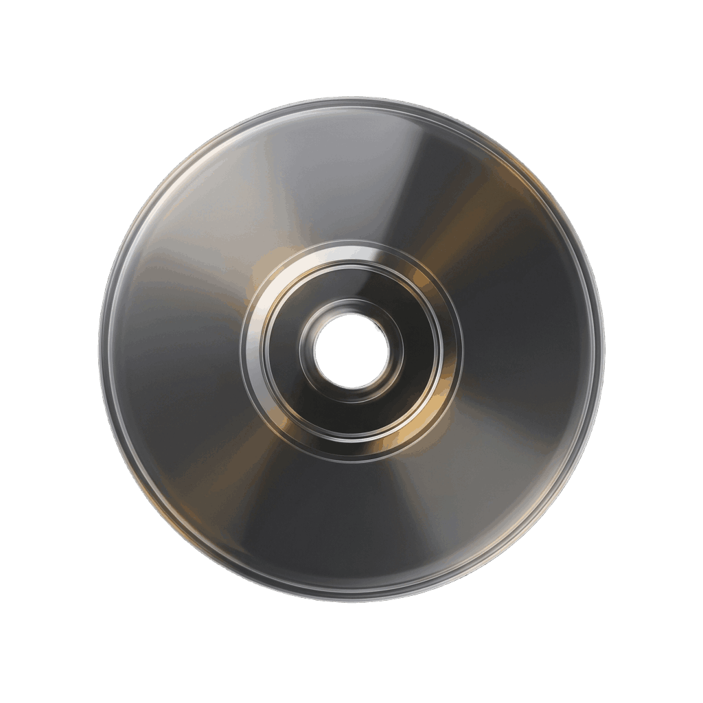

Who's at the counter?
For the whole household
Everyone picks their profile, with their own library and password.

A self-hosted home for the films and series your household owns and watches, with the charm of the old video store.
Movies and series, tracked the way you collect them.
Everyone picks their profile, with their own library and password.
Suggest a film to someone at home, with a short note.
Three boxsets on your home screen. Pull one out to pick tonight's film.
Saw it on the big screen? Keep the ticket in your collection.
Pick a mood and get something new to watch.
Score everything you never rated, one poster at a time.
Spin your shelf and land on an old favourite.
Your next episodes, and the ones about to air.
Status, ownership and progress, down to the episode.
Your month as a 90s rental receipt, ready to share.
Play any title on your TV and see what's playing.
Install it like an app. It keeps going without a connection.
git clone https://github.com/alberto-romano03/shelfit-app.git
cd shelfit-app && cp .env.example .env
# add TMDB_API_KEY and APP_PASSWORD to .env
docker compose up -d --build
You need Docker and a free TMDB key. The README covers the rest.